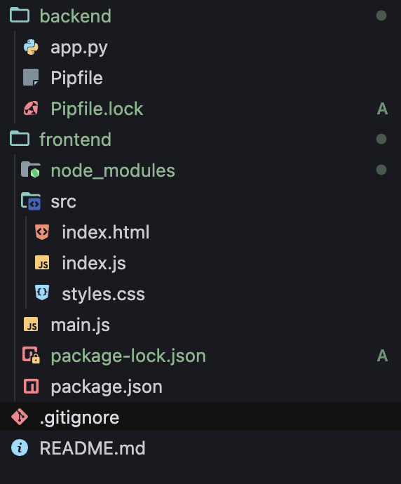
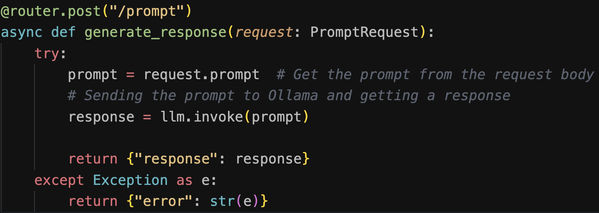
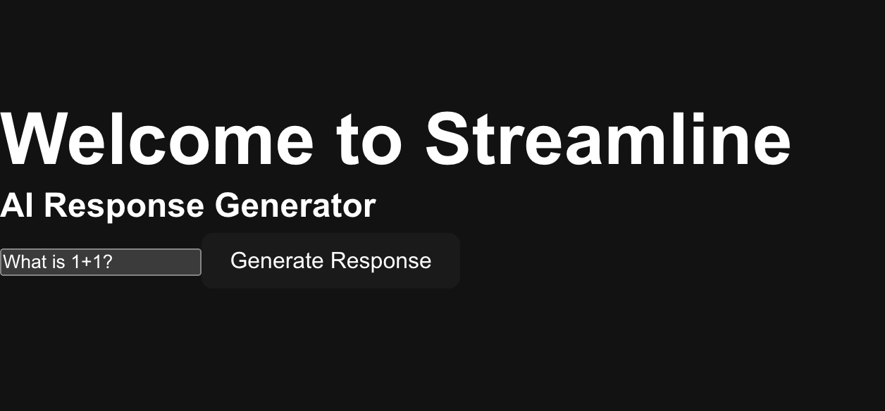
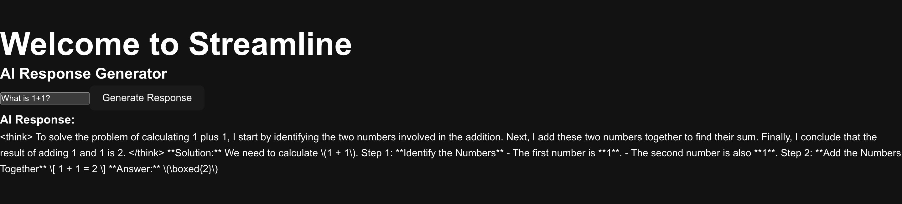
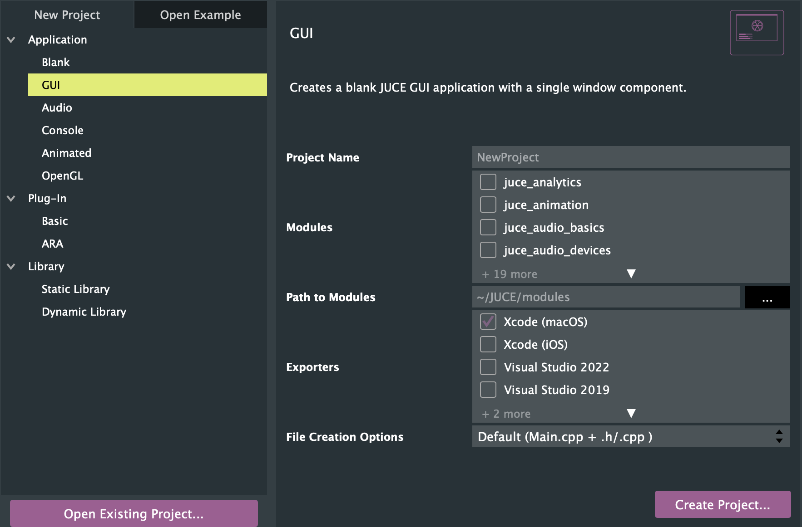
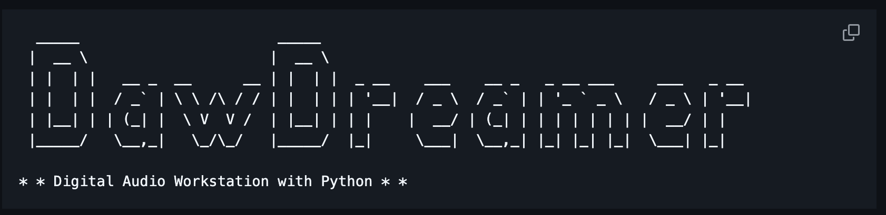
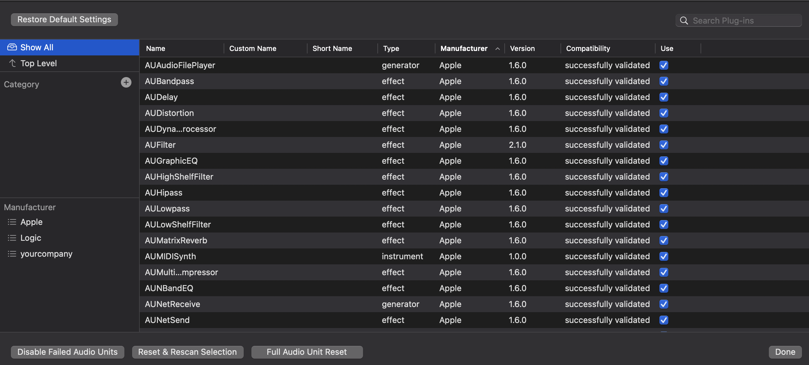
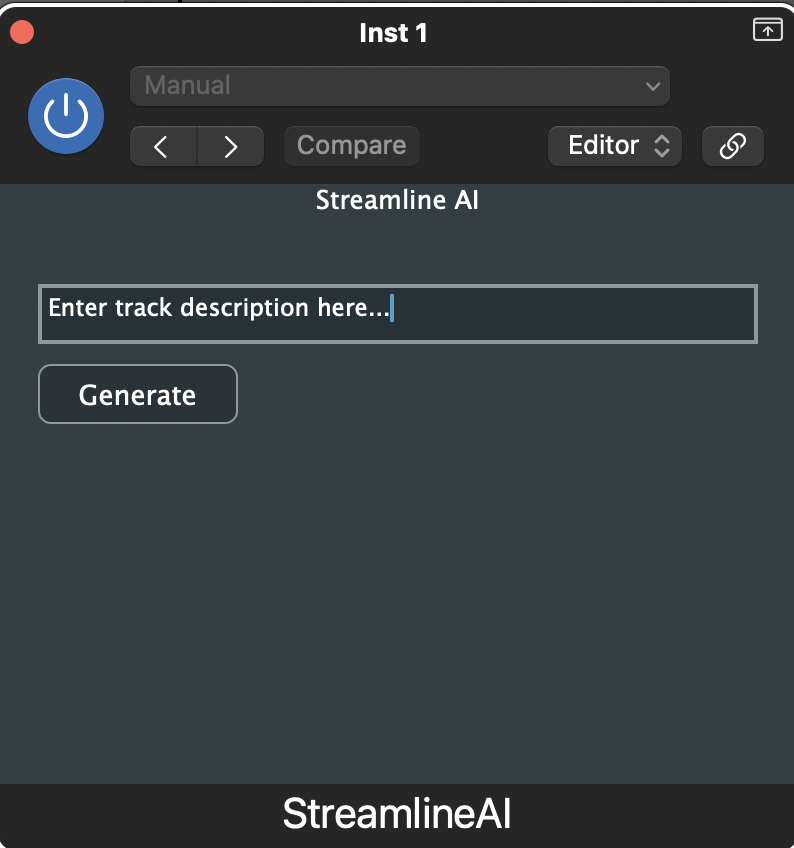

Here is my timeline for the development of Streamline
Access the github here
Phase 1 (completed Feb 4, 2025)
Basic App setup with:
- Backend: Flask
- Frontend: Electron
2: Create frontend folder with npm
3: Write main code files (app.py, main.js)
Final result:

Phase 2 (completed Feb 10, 2025)
Included DeepSeek AI model and created Vite Frontend:
- Backend: Flask + Fast API
- Frontend: VITE LocalHost
1: Switched from Pipenv to venv, installed dependencies , and used uvicorn to run backend.
2: Imported Ollama and a Deepseek model in python script.

3: Created VITE app using npm, and connected back to Fast API for AI response

4: Tested AI LLM usage:

After prompt submitted:

Phase 3 (completed Feb 18, 2025)
Switched from building from scratch to JUCE Framework
Steps taken:Made new directory for open source clones

Phase 4 (completed Feb 24, 2025)
Implemented DawDreamer (Open source from Github)
Steps taken:Cloned DawDreamer to my project
Used Projucer App to use .jucer file provided
Currently fighting errors in Xcode. 
Here is a quick video to show current progress: (Feb 24)
Phase 5
Still Working on Getting the App to Build:
- Kept trying to fix the errors to make the app work
- Looked into using an older version of Xcode (like they said)
2: Read more about why Xcode 15 might not work with the app
3: Tried to figure out how to get and use Xcode 14 on my Mac
4: Still looking at other ways to build a music app if this is too hard
What I Learned: Mainly, I spent time trying to fix the errors and understand why it's not building. I'm still figuring out the best way to move forward and get the project working.

Phase 6
Heavy research on Google's Magenta Tensorflow
- Basic Plugin window has been made
- Looking into how to implement existing AI models such as tensorflow to generate tracks for users

Phase 7
Heavy research on Google's Magenta Tensorflow (continued)
- Final UI has been acheived
- Found Google Music LM in order to send API requests.

MVP
AI Audio Generator Plugin
A plugin that uses free AI tools (such as HuggingFace, Magenta, or OpenAI) to generate musical content directly inside a DAW.
Goal: Convert a user text prompt (e.g., "Create a simple piano melody") into one of two types of musical output: MIDI or Audio.
- MIDI Generation: For users who already have a software instrument and only need a MIDI sequence.
- Audio Generation: For users who have no instrument loaded and want a complete audio clip ready to place on a track.
Workflow:
- User selects output type: MIDI or Audio.
-
Interactive Questionnaire: The plugin guides the user through a series of at least 10 questions:
- Basic info: Tempo, number of measures, key, time signature.
- Specific details: Instrument choice, genre, mood, style, rhythm, etc.
- Questions use both multiple-choice and text-response formats for precision.
- Note: Only one instrument is supported at a time to encourage creativity and avoid full automation.
- Data Transfer: The plugin sends all collected input data to a Python backend script via API call.
- AI Generation: The Python script uses an AI music generator (via API key) to process the user request and generate the output in the desired format (MIDI or audio).
-
Output:
- If MIDI, the user pastes the MIDI into their DAW’s piano roll or MIDI track.
- If Audio, the user adds the generated audio clip directly to the DAW track using the plugin.
Visuals:

Leads to:

Video Demo: